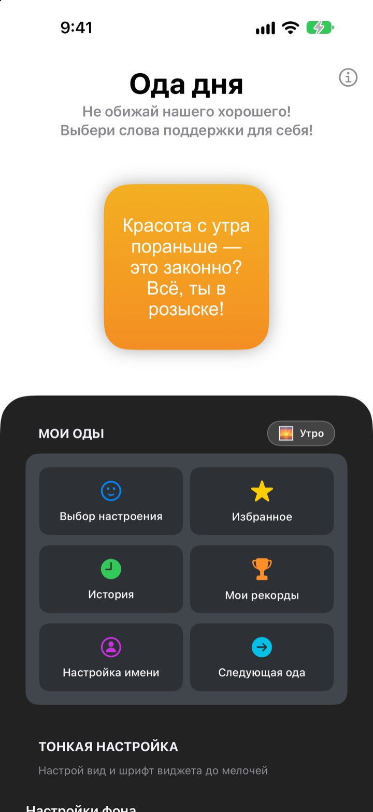
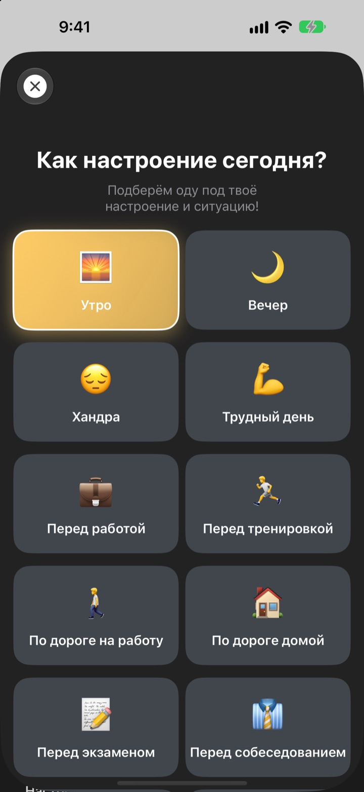
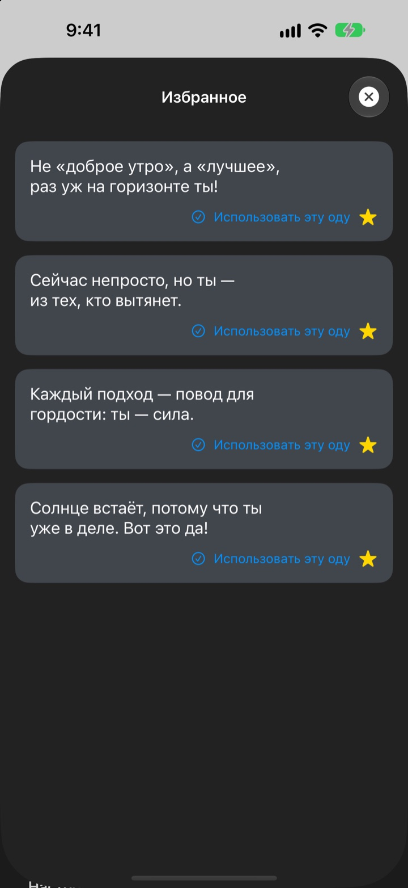
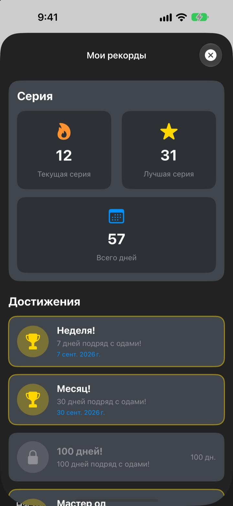

Каждый раз, когда берёте телефон,
вас ждёт преданный фанат
Ода дня это виджет, который хвалит вас нарочно чересчур. Утром утренняя ода, перед собеседованием ода для собеседования. Шрифт, цвета и фон настраиваются под ваш вкус.
Одна покупка открывает всё. Ни подписок, ни рекламы.

Получите оду прямо сейчас
Выберите настроение, и виджет покажет оду для него. Нажмите «Следующая ода», и выпадет случайная из всех 281.
Кто ваш самый строгий критик? Не вы ли?
По дороге на работу, перед собеседованием, по пути домой голос в голове в основном ворчит. Ода дня по несколько раз в день встаёт на вашу сторону прямо с экрана «Домой», и даже чуть больше, чем нужно. В тот момент, когда вы невольно улыбнётесь, вернётся и немного уверенности.
Ода под ваше настроение
Выберите одно из 14 настроений и ситуаций, например Утро, По дороге на работу, Трудный день, Перед собеседованием или Перед свиданием, и подходящая ода сразу появится на виджете. Не можете решить? Есть Случайно.

Любимые оды остаются с вами
Нажмите на звёздочку, чтобы сохранить оду в Избранное, а прошлые найдёте в Истории. Нажмите Использовать эту оду, и она сразу встанет на виджет.

Заглядывайте каждый день, и счёт растёт
Каждый день, когда вы смотрите оду, продлевает серию. За 7, 30 и 100 дней подряд, а также за 50 и 100 дней всего открываются достижения.

Начать можно за три шага
- 1
Выберите настроение
Откройте
Выбор настроенияи нажмите то, что подходит сейчас. - 2
Настройте виджет
В тонкой настройке выберите шрифт, цвет текста, фон и период обновления.
- 3
Добавьте его на экран «Домой»
Нажмите и удерживайте экран «Домой», нажмите + и найдите Оду дня.
Виджет можно настроить так
- Шрифт
- 13 вариантов, среди них Futura, Georgia и Marker Felt
- Цвет текста
- Любой, какой нравится
- Фон
- Градиент из двух цветов или одно из встроенных фото
- Выравнивание
- По левому краю, по центру или по правому краю
- Интервал строк
- Плотнее или свободнее
- Период обновления
- Новая ода каждые 5, 15 или 30 минут
Размер виджета выбирается при добавлении на экран «Домой».
Купили один раз, и всё
Приложение
- 281 ода для 14 настроений
- Виджет на экран «Домой» в вашем стиле
- Избранное и История
- Серии и достижения
Поддержать разработчика
- Небольшие, средние или крупные чаевые на выбор
- Они ничего не открывают. Это просто способ сказать спасибо
Только если и когда захочется.
Без подписок, доплат и рекламы.
Частые вопросы
Как добавить виджет?
Нажмите и удерживайте пустое место на экране «Домой», пока значки не начнут покачиваться, нажмите + вверху, найдите Оду дня и выберите размер.
Как выбирается следующая ода?
Когда вы выбираете настроение, ода для него сразу появляется на виджете. Дальше виджет с выбранным периодом обновления показывает случайную оду из всех 281. В приложении можно нажать Следующая ода и переключить самому.
Можно поменять шрифт или период обновления?
Да. В тонкой настройке меняются шрифт, цвет текста, фон, выравнивание, интервал строк и период обновления. Период можно выбрать: 5, 15 или 30 минут.
Виджет сменился не сразу.
Когда перерисовать виджет, решает iOS, поэтому смена может немного запаздывать. Откройте приложение и закройте его, и виджет обновится.
Как считается серия?
Каждый день подряд, когда вы смотрите оду, добавляет день к серии. В разделе Мои рекорды видны текущая серия, лучший результат, общее число дней и достижения.
Пропали избранное и история.
Всё хранится только на устройстве, поэтому при удалении приложения или смене телефона данные не переносятся. Если вы ничего не удаляли, а данные пропали, напишите нам на почту.
Мои данные куда-то отправляются?
Нет. Приложение не собирает личные данные. Избранное и история остаются на вашем устройстве.
Как сообщить об ошибке или предложить идею?
Прямо через Написать разработчику в приложении, по почте или в директ Instagram @lee25_ios. Ответим, как только посмотрим.
Вопросы или идеи? Пишите на leeo@kakao.com.